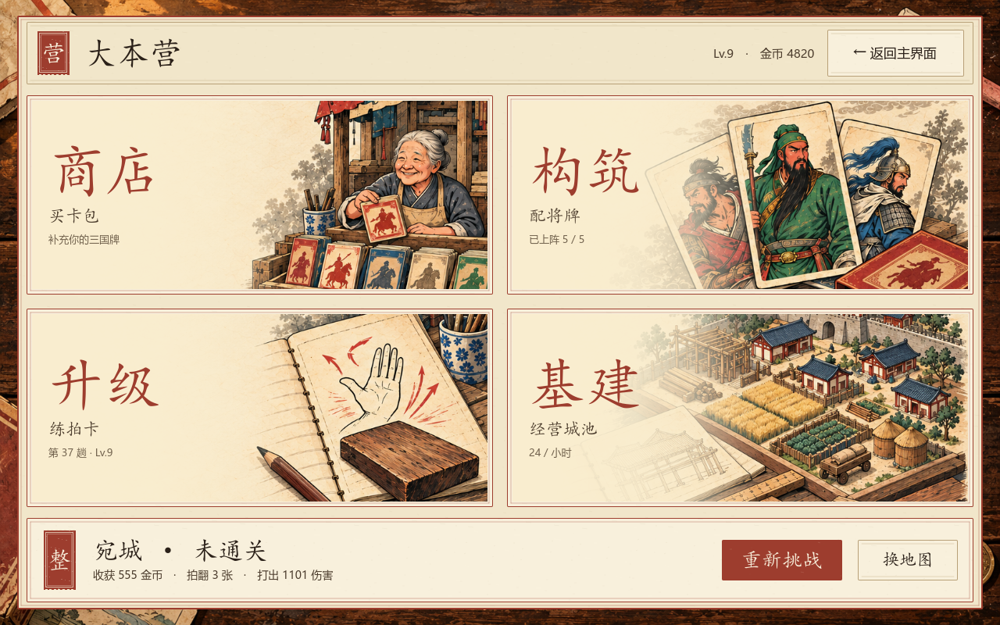

<!doctype html>
<html lang="zh-CN">
<meta charset="utf-8">
<meta name="viewport" content="width=device-width,initial-scale=1">
<title>拍案三国 · 四区大本营实机</title>
<style>
*{box-sizing:border-box}body{margin:0;background:#282018;color:#2b211a;font-family:"Microsoft YaHei",sans-serif}main{max-width:1460px;margin:auto;padding:32px 24px;background:#f1e6ca}header{display:flex;justify-content:space-between;align-items:end;gap:24px;border-bottom:2px solid #9d3d2e;padding-bottom:20px}h1{font-family:KaiTi,serif;font-size:40px;margin:0 0 10px}p{line-height:1.8;margin:0;color:#74654f}a{color:#9d3d2e}nav{display:flex;gap:10px;flex-wrap:wrap;margin:24px 0}button{border:1px solid #9d3d2e;border-radius:0;background:#f8f0dc;color:#9d3d2e;font:inherit;padding:12px 22px;cursor:pointer}button[aria-selected=true]{background:#9d3d2e;color:#f8f0dc}figure{margin:0}img{display:block;width:100%;height:auto;border:1px solid #b8a078}figcaption{padding:14px 0;line-height:1.7}footer{margin-top:24px;border-top:1px solid #b8a078;padding-top:18px}small{color:#74654f}@media(max-width:700px){main{padding:20px 12px}header{display:block}h1{font-size:32px}button{padding:10px 12px}}
</style>
<main>
<header><div><h1>四区大本营</h1><p>商店 · 构筑 · 升级 · 基建</p></div><p>v1.4 实机截图<br><a href="实施说明.md">查看实施与验证说明</a></p></header>
<nav aria-label="实机界面"></nav>
<figure><figcaption id="caption"></figcaption></figure>
<footer><p>胜败都先回大本营。通关后进入大地图；未通关可先升级，再重新挑战或换地图。</p><small>图片由 Godot 工程实际渲染，展示用中期测试档；截图中的金币和关卡是测试数据。</small></footer>
</main>
<script>
const pages=[
['未通关','camp-failed.png','宛城未通关：保留四区整备，底部重新挑战 / 换地图。'],
['已通关','camp-cleared.png','宛城已通关：四区继续可用，整备后进入大地图。'],
['升级','upgrade.png','技能升级单独进入一页，购买后仍留在升级页；返回营地保留刚才战果。'],
['构筑','deck.png','构筑页保留将兵上阵、武将培养、独立装备和兵位操作。'],
['商店','shop.png','奶奶卡铺接入买包、招降、合成和图鉴；开包后可继续整备。'],
['基建','base.png','基建连接城池、建筑放置与强化、合成、离线收益。'],
['换地图','map.png','失败后打开地图默认定位原区域，可重新选择已解锁目标。']
];
const nav=document.querySelector('nav'),img=document.querySelector('#shot'),caption=document.querySelector('#caption');
pages.forEach((p,i)=>{let b=document.createElement('button');b.textContent=p[0];b.setAttribute('aria-selected',i===0?'true':'false');b.onclick=()=>{nav.querySelectorAll('button').forEach(x=>x.setAttribute('aria-selected','false'));b.setAttribute('aria-selected','true');img.src=p[1];img.alt=p[2];caption.textContent=p[2];};nav.append(b);});caption.textContent=pages[0][2];
</script>
</html>
